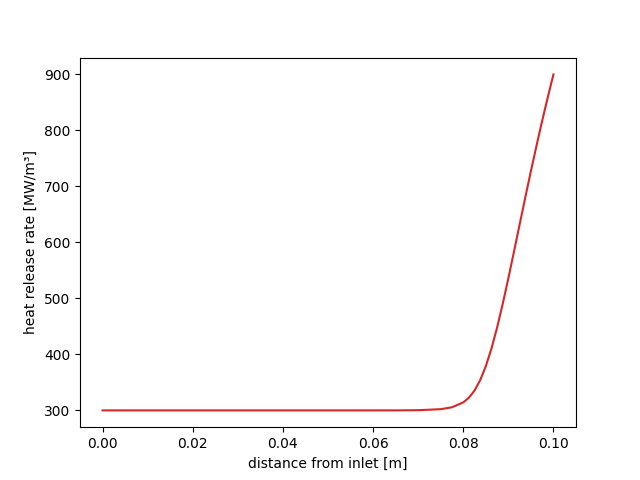

Note
Go to the end to download the full example code.
Catalytic combustion of methane on platinum#
This script solves a catalytic combustion problem. A stagnation flow is set up, with a gas inlet 10 cm from a platinum surface at 900 K. The lean, premixed methane/air mixture enters at ~6 cm/s (0.06 kg/m2/s), and burns catalytically on the platinum surface. Gas-phase chemistry is included too, and has some effect very near the surface.
The catalytic combustion mechanism is from Deutschmann et al., 26th Symp. (Intl.) on Combustion,1996 pp. 1747-1754
Requires: cantera >= 3.0, matplotlib >= 2.0
import numpy as np
import matplotlib.pyplot as plt
import cantera as ct
Problem Definition#
Parameter values are collected here to make it easier to modify them
We will solve first for a hydrogen/air case to use as the initial estimate for the methane/air case
# composition of the inlet premixed gas for the hydrogen/air case
comp1 = 'H2:0.05, O2:0.21, N2:0.78, AR:0.01'
# composition of the inlet premixed gas for the methane/air case
comp2 = 'CH4:0.095, O2:0.21, N2:0.78, AR:0.01'
# The inlet/surface separation is 10 cm.
width = 0.1 # m
loglevel = 1 # amount of diagnostic output (0 to 5)
Create the phase objects#
The surf_phase object will be used to evaluate all surface chemical production
rates. It will be created from the interface definition Pt_surf in input file
ptcombust.yaml, which implements the reaction mechanism of Deutschmann et
al., 1995 for catalytic combustion on platinum.
This phase definition also references the phase gas in the same input file,
which will be created and used to evaluate all thermodynamic, kinetic, and
transport properties. It is a stripped-down version of GRI-Mech 3.0.
surf_phase = ct.Interface("ptcombust.yaml", "Pt_surf")
surf_phase.TP = tsurf, p
gas = surf_phase.adjacent["gas"]
gas.TPX = tinlet, p, comp1
# integrate the coverage equations in time for 1 s, holding the gas
# composition fixed to generate a good starting estimate for the coverages.
surf_phase.advance_coverages(1.0)
# create the object that simulates the stagnation flow, and specify an initial
# grid
sim = ct.ImpingingJet(gas=gas, width=width, surface=surf_phase)
# Objects of class ImpingingJet have members that represent the gas inlet
# ('inlet') and the surface ('surface'). Set some parameters of these objects.
sim.inlet.mdot = mdot
sim.inlet.T = tinlet
sim.inlet.X = comp1
sim.surface.T = tsurf
Show the initial solution estimate
sim.show()
>>>>>>>>>>>>>>>>>>>>>>>>>>>>>>>>> inlet <<<<<<<<<<<<<<<<<<<<<<<<<<<<<<<<<
Mass Flux: 0.06 kg/m^2/s
Temperature: 300 K
Mass Fractions:
H2 0.003467
O2 0.2311
AR 0.01374
N2 0.7516
>>>>>>>>>>>>>>>>>>>>>>>>>>>>>>>>> flame <<<<<<<<<<<<<<<<<<<<<<<<<<<<<<<<<
Pressure: 1.013e+05 Pa
-------------------------------------------------------------------------------
z velocity spread_rate T lambda eField
-------------------------------------------------------------------------------
0 0.05335 0 300 0 0
0.02 0.04268 0 420 0 0
0.04 0.03201 0 540 0 0
0.06 0.02134 0 660 0 0
0.08 0.01067 0 780 0 0
0.1 0 0 900 0 0
-------------------------------------------------------------------------------
z Uo H2 H O O2
-------------------------------------------------------------------------------
0 0 0.003467 0 0 0.2311
0.02 0 0.003467 0 0 0.2311
0.04 0 0.003467 0 0 0.2311
0.06 0 0.003467 0 0 0.2311
0.08 0 0.003467 0 0 0.2311
0.1 0 0.003467 0 0 0.2311
-------------------------------------------------------------------------------
z OH H2O HO2 H2O2 C
-------------------------------------------------------------------------------
0 0 0 0 0 0
0.02 0 0 0 0 0
0.04 0 0 0 0 0
0.06 0 0 0 0 0
0.08 0 0 0 0 0
0.1 0 0 0 0 0
-------------------------------------------------------------------------------
z CH CH2 CH2(S) CH3 CH4
-------------------------------------------------------------------------------
0 0 0 0 0 0
0.02 0 0 0 0 0
0.04 0 0 0 0 0
0.06 0 0 0 0 0
0.08 0 0 0 0 0
0.1 0 0 0 0 0
-------------------------------------------------------------------------------
z CO CO2 HCO CH2O CH2OH
-------------------------------------------------------------------------------
0 0 0 0 0 0
0.02 0 0 0 0 0
0.04 0 0 0 0 0
0.06 0 0 0 0 0
0.08 0 0 0 0 0
0.1 0 0 0 0 0
-------------------------------------------------------------------------------
z CH3O CH3OH C2H C2H2 C2H3
-------------------------------------------------------------------------------
0 0 0 0 0 0
0.02 0 0 0 0 0
0.04 0 0 0 0 0
0.06 0 0 0 0 0
0.08 0 0 0 0 0
0.1 0 0 0 0 0
-------------------------------------------------------------------------------
z C2H4 C2H5 C2H6 HCCO CH2CO
-------------------------------------------------------------------------------
0 0 0 0 0 0
0.02 0 0 0 0 0
0.04 0 0 0 0 0
0.06 0 0 0 0 0
0.08 0 0 0 0 0
0.1 0 0 0 0 0
-------------------------------------------------------------------------------
z HCCOH AR N2
-------------------------------------------------------------------------------
0 0 0.01374 0.7516
0.02 0 0.01374 0.7516
0.04 0 0.01374 0.7516
0.06 0 0.01374 0.7516
0.08 0 0.01374 0.7516
0.1 0 0.01374 0.7516
>>>>>>>>>>>>>>>>>>>>>>>>>>>>>>>>> surface <<<<<<<<<<<<<<<<<<<<<<<<<<<<<<<<<
Temperature: 900 K
Coverages:
PT(S) 0.4879
H(S) 4.738e-06
H2O(S) 2.755e-05
OH(S) 0.01028
CO(S) 0
CO2(S) 0
CH3(S) 0
CH2(S)s 0
CH(S) 0
C(S) 0
O(S) 0.5018
Solving problems with stiff chemistry coupled to flow can require a sequential approach where solutions are first obtained for simpler problems and used as the initial guess for more difficult problems.
# disable the surface coverage equations, and turn off all gas and surface
# chemistry.
sim.surface.coverage_enabled = False
surf_phase.set_multiplier(0.0)
gas.set_multiplier(0.0)
solve the problem, refining the grid if needed, to determine the non- reacting velocity and temperature distributions
************ Solving on 6 point grid with energy equation enabled ************
..............................................................................
Attempt Newton solution of steady-state problem.
Newton steady-state solve succeeded.
Problem solved on [6] point grid(s).
..............................................................................
grid refinement disabled.
******************** Solving with grid refinement enabled ********************
..............................................................................
Attempt Newton solution of steady-state problem.
Newton steady-state solve succeeded.
Problem solved on [6] point grid(s).
..............................................................................
##############################################################################
Refining grid in flame.
New points inserted after grid points 3 4
to resolve T spread_rate
##############################################################################
..............................................................................
Attempt Newton solution of steady-state problem.
Newton steady-state solve succeeded.
Problem solved on [8] point grid(s).
..............................................................................
##############################################################################
Refining grid in flame.
New points inserted after grid points 5 6
to resolve spread_rate
##############################################################################
..............................................................................
Attempt Newton solution of steady-state problem.
Newton steady-state solve succeeded.
Problem solved on [10] point grid(s).
..............................................................................
no new points needed in flame
now turn on the surface coverage equations, and turn the chemistry on slowly
sim.surface.coverage_enabled = True
for mult in np.logspace(-5, 0, 6):
surf_phase.set_multiplier(mult)
gas.set_multiplier(mult)
print('Multiplier =', mult)
sim.solve(loglevel)
Multiplier = 1e-05
..............................................................................
Attempt Newton solution of steady-state problem.
Newton steady-state solve succeeded.
Problem solved on [10] point grid(s).
..............................................................................
no new points needed in flame
Multiplier = 0.0001
..............................................................................
Attempt Newton solution of steady-state problem.
Newton steady-state solve succeeded.
Problem solved on [10] point grid(s).
..............................................................................
no new points needed in flame
Multiplier = 0.001
..............................................................................
Attempt Newton solution of steady-state problem.
Newton steady-state solve succeeded.
Problem solved on [10] point grid(s).
..............................................................................
no new points needed in flame
Multiplier = 0.01
..............................................................................
Attempt Newton solution of steady-state problem.
Newton steady-state solve succeeded.
Problem solved on [10] point grid(s).
..............................................................................
no new points needed in flame
Multiplier = 0.1
..............................................................................
Attempt Newton solution of steady-state problem.
Newton steady-state solve succeeded.
Problem solved on [10] point grid(s).
..............................................................................
no new points needed in flame
Multiplier = 1.0
..............................................................................
Attempt Newton solution of steady-state problem.
Newton steady-state solve succeeded.
Problem solved on [10] point grid(s).
..............................................................................
no new points needed in flame
At this point, we should have the solution for the hydrogen/air problem.
sim.show()
>>>>>>>>>>>>>>>>>>>>>>>>>>>>>>>>> inlet <<<<<<<<<<<<<<<<<<<<<<<<<<<<<<<<<
Mass Flux: 0.06 kg/m^2/s
Temperature: 300 K
Mass Fractions:
H2 0.003467
O2 0.2311
AR 0.01374
N2 0.7516
>>>>>>>>>>>>>>>>>>>>>>>>>>>>>>>>> flame <<<<<<<<<<<<<<<<<<<<<<<<<<<<<<<<<
Pressure: 1.013e+05 Pa
-------------------------------------------------------------------------------
z velocity spread_rate T lambda eField
-------------------------------------------------------------------------------
0 0.05335 4.314e-21 300 -0.4 0
0.02 0.05068 0.1333 300 -0.4 0
0.04 0.04268 0.2666 300 -0.4 0
0.06 0.02939 0.4001 300.6 -0.4 0
0.07 0.02105 0.4687 305.4 -0.4 0
0.08 0.013 0.5514 347.5 -0.4 0
0.085 0.009565 0.5931 426.2 -0.4 0
0.09 0.005933 0.577 569 -0.4 0
0.095 0.001988 0.3977 740.3 -0.4 0
0.1 -5.601e-93 0 900 -0.4 0
-------------------------------------------------------------------------------
z Uo H2 H O O2
-------------------------------------------------------------------------------
0 0 0.003467 1.141e-20 6.297e-20 0.2311
0.02 0 0.003467 6.206e-27 8.124e-21 0.2311
0.04 0 0.003462 1.328e-27 1.588e-21 0.2311
0.06 0 0.003399 4.023e-27 2.432e-20 0.2311
0.07 0 0.003197 1.331e-25 9.862e-19 0.2308
0.08 0 0.002515 7.173e-24 1.598e-17 0.2273
0.085 0 0.001917 8.256e-22 5.753e-17 0.2199
0.09 0 0.001239 2.849e-18 1.575e-15 0.2059
0.095 0 0.000594 1.554e-14 4.716e-13 0.1886
0.1 0 1.728e-05 2.758e-17 8.599e-16 0.1721
-------------------------------------------------------------------------------
z OH H2O HO2 H2O2 C
-------------------------------------------------------------------------------
0 6.64e-25 6.854e-10 7.063e-16 2.653e-16 -6.631e-20
0.02 1.191e-23 3.18e-08 3.583e-14 1.355e-14 -9.665e-28
0.04 2.319e-24 1.404e-06 1.614e-12 7.189e-13 -1.027e-35
0.06 2.745e-23 5.255e-05 5.913e-11 3.317e-11 1.797e-37
0.07 4.887e-22 0.0005515 5.581e-10 4.408e-10 1.505e-28
0.08 7.348e-21 0.005051 4.931e-09 4.843e-09 -3.125e-29
0.085 3.052e-19 0.01333 1.502e-08 1.349e-08 -1.483e-36
0.09 2.408e-16 0.0275 3.905e-08 2.793e-08 -3.917e-29
0.095 2.227e-12 0.04362 7.947e-08 4.071e-08 4.53e-27
0.1 1.912e-08 0.05837 7.971e-08 4.084e-08 6.801e-20
-------------------------------------------------------------------------------
z CH CH2 CH2(S) CH3 CH4
-------------------------------------------------------------------------------
0 5.56e-20 -5.541e-23 1.598e-38 -2.752e-22 1.1e-20
0.02 2.529e-28 1.905e-29 7.953e-37 3.524e-20 1.158e-20
0.04 1.791e-36 5.081e-36 -8.566e-41 4.205e-20 1.158e-20
0.06 5.526e-44 6.701e-38 -2.159e-41 4.148e-20 -1.899e-20
0.07 2.466e-43 -1.64e-35 -4.55e-42 3.543e-20 -3.333e-19
0.08 1.537e-34 -2.498e-33 -6.602e-39 1.237e-20 -3.253e-18
0.085 -7.023e-40 -6.077e-32 -4.52e-37 3.099e-21 -8.914e-18
0.09 -7.299e-35 -1.888e-30 -1.349e-34 2.335e-22 -1.932e-17
0.095 -4.182e-27 4.141e-27 2.096e-30 -3.687e-24 -3.198e-17
0.1 -8.195e-20 4.623e-27 2.11e-30 -2.073e-24 -4.397e-17
-------------------------------------------------------------------------------
z CO CO2 HCO CH2O CH2OH
-------------------------------------------------------------------------------
0 4.197e-22 2.121e-25 9.851e-29 4.416e-25 -9.537e-43
0.02 2.652e-21 1.409e-23 6.546e-27 2.959e-23 7.764e-45
0.04 1.027e-20 -4.66e-21 3.095e-34 2.198e-22 1.909e-41
0.06 3.117e-19 -2.463e-19 -3.238e-38 6.211e-21 8.885e-40
0.07 3.173e-18 -3.218e-18 -5.405e-36 3.321e-20 1.198e-38
0.08 2.235e-17 -2.822e-17 1.038e-33 1.043e-19 2.789e-37
0.085 2.628e-17 -2.897e-17 -1.714e-32 8.964e-20 1.175e-35
0.09 -2.714e-17 9.597e-17 6.289e-31 1.23e-20 1.077e-32
0.095 -1.317e-16 3.526e-16 -6.008e-26 -9.249e-20 -1.051e-29
0.1 -2.329e-16 6.081e-16 2.486e-26 -1.116e-19 2.122e-25
-------------------------------------------------------------------------------
z CH3O CH3OH C2H C2H2 C2H3
-------------------------------------------------------------------------------
0 5.499e-30 -2.358e-21 1.96e-20 -1.299e-21 -1.07e-26
0.02 3.712e-28 -2.358e-21 1.749e-28 -1.253e-21 3.681e-33
0.04 2.035e-26 -2.354e-21 1.32e-36 -1.253e-21 1.964e-38
0.06 7.341e-25 -2.222e-21 8.637e-45 -1.252e-21 1.794e-42
0.07 5.701e-24 -1.441e-21 6.021e-49 -1.239e-21 -2.517e-40
0.08 1.23e-23 2.977e-21 3.486e-46 -1.079e-21 -1.945e-37
0.085 4.38e-24 5.551e-21 1.853e-42 -6.866e-22 -3.362e-35
0.09 1.336e-25 6.25e-21 4.068e-36 1.648e-22 -6.082e-32
0.095 -6.755e-28 6.855e-21 -4.684e-30 1.301e-21 -3.349e-28
0.1 -1.01e-26 7.107e-21 2.037e-25 1.897e-21 -3.348e-28
-------------------------------------------------------------------------------
z C2H4 C2H5 C2H6 HCCO CH2CO
-------------------------------------------------------------------------------
0 -5.175e-21 -9.728e-34 -4.703e-22 -3.807e-41 1.736e-21
0.02 -5.175e-21 -6.829e-32 -3.328e-20 -1.956e-39 1.736e-21
0.04 -5.179e-21 -1.36e-32 -4.106e-20 8.164e-39 1.743e-21
0.06 -5.416e-21 -4.135e-33 -4.547e-20 3.725e-37 2.197e-21
0.07 -8.608e-21 -1.906e-32 -6.242e-20 4.633e-36 9.599e-21
0.08 -4.759e-20 -1.327e-31 -1.814e-19 -8.192e-36 1.214e-19
0.085 -1.406e-19 1.365e-30 -4.511e-19 -7.3e-33 4.592e-19
0.09 -3.357e-19 3.883e-28 -1.093e-18 -5.221e-30 1.312e-18
0.095 -5.914e-19 -4.388e-24 -2.007e-18 -1.318e-26 2.547e-18
0.1 -5.919e-19 -3.015e-19 -2.888e-18 -1.323e-26 3.732e-18
-------------------------------------------------------------------------------
z HCCOH AR N2
-------------------------------------------------------------------------------
0 9.65e-21 0.01374 0.7516
0.02 9.65e-21 0.01374 0.7516
0.04 9.65e-21 0.01374 0.7516
0.06 9.668e-21 0.01374 0.7517
0.07 9.914e-21 0.01374 0.7517
0.08 1.165e-20 0.01374 0.7514
0.085 6.099e-21 0.01373 0.7511
0.09 -3.049e-20 0.01374 0.7516
0.095 -9.934e-20 0.01378 0.7534
0.1 -1.594e-19 0.01382 0.7557
>>>>>>>>>>>>>>>>>>>>>>>>>>>>>>>>> surface <<<<<<<<<<<<<<<<<<<<<<<<<<<<<<<<<
Temperature: 900 K
Coverages:
PT(S) 0.08832
H(S) 1.352e-07
H2O(S) 1.677e-05
OH(S) 0.00567
CO(S) -1.091e-18
CO2(S) 1.324e-24
CH3(S) 4.281e-24
CH2(S)s 4.281e-24
CH(S) 4.281e-24
C(S) 1.416e-22
O(S) 0.906
Now switch the inlet to the methane/air composition.
sim.inlet.X = comp2
# set more stringent grid refinement criteria
sim.set_refine_criteria(100.0, 0.15, 0.2, 0.0)
# solve the problem for the final time
sim.solve(loglevel)
..............................................................................
Attempt Newton solution of steady-state problem.
Newton steady-state solve failed.
Attempt 10 timesteps.
Final timestep info: dt= 0.0003844 log(ss)= -0.8978
Attempt Newton solution of steady-state problem.
Newton steady-state solve failed.
Attempt 10 timesteps.
Final timestep info: dt= 0.01478 log(ss)= -0.9305
Attempt Newton solution of steady-state problem.
Newton steady-state solve failed.
Attempt 10 timesteps.
Final timestep info: dt= 0.5682 log(ss)= 0.9062
Attempt Newton solution of steady-state problem.
Newton steady-state solve succeeded.
Problem solved on [10] point grid(s).
..............................................................................
##############################################################################
Refining grid in flame.
New points inserted after grid points 0 1 2 3 4 5 6 7 8
to resolve AR C2H6 CH2O CH4 CO CO2 H2O N2 O2 OH T spread_rate velocity
##############################################################################
..............................................................................
Attempt Newton solution of steady-state problem.
Newton steady-state solve succeeded.
Problem solved on [19] point grid(s).
..............................................................................
##############################################################################
Refining grid in flame.
New points inserted after grid points 9 10 11 12 13 14 15 16 17
to resolve AR CH2O CH4 CO CO2 H2O N2 O2 OH T spread_rate velocity
##############################################################################
..............................................................................
Attempt Newton solution of steady-state problem.
Newton steady-state solve succeeded.
Problem solved on [28] point grid(s).
..............................................................................
##############################################################################
Refining grid in flame.
New points inserted after grid points 24 25 26
to resolve OH spread_rate velocity
##############################################################################
..............................................................................
Attempt Newton solution of steady-state problem.
Newton steady-state solve succeeded.
Problem solved on [31] point grid(s).
..............................................................................
##############################################################################
Refining grid in flame.
New points inserted after grid points 29
to resolve OH
##############################################################################
..............................................................................
Attempt Newton solution of steady-state problem.
Newton steady-state solve succeeded.
Problem solved on [32] point grid(s).
..............................................................................
no new points needed in flame
show the solution
sim.show()
>>>>>>>>>>>>>>>>>>>>>>>>>>>>>>>>> inlet <<<<<<<<<<<<<<<<<<<<<<<<<<<<<<<<<
Mass Flux: 0.06 kg/m^2/s
Temperature: 300 K
Mass Fractions:
O2 0.2204
CH4 0.04998
AR 0.0131
N2 0.7166
>>>>>>>>>>>>>>>>>>>>>>>>>>>>>>>>> flame <<<<<<<<<<<<<<<<<<<<<<<<<<<<<<<<<
Pressure: 1.013e+05 Pa
-------------------------------------------------------------------------------
z velocity spread_rate T lambda eField
-------------------------------------------------------------------------------
0 0.05304 -4.814e-24 300 -0.3867 0
0.01 0.05239 0.06444 300 -0.3867 0
0.02 0.05046 0.1289 300 -0.3867 0
0.03 0.04724 0.1933 300 -0.3867 0
0.04 0.04273 0.2578 300 -0.3867 0
0.05 0.03693 0.3222 300 -0.3867 0
0.06 0.02984 0.3867 300 -0.3867 0
0.065 0.02582 0.4189 300.1 -0.3867 0
0.07 0.02149 0.4513 300.4 -0.3867 0
0.075 0.01693 0.4842 302.2 -0.3867 0
0.0775 0.01465 0.5017 305.6 -0.3867 0
0.08 0.01247 0.521 314.3 -0.3867 0
0.08125 0.01147 0.5318 322.7 -0.3867 0
0.0825 0.01056 0.5434 335.5 -0.3867 0
0.08375 0.009736 0.5556 354 -0.3867 0
0.085 0.008971 0.5673 378.9 -0.3867 0
0.08625 0.008228 0.5766 410.4 -0.3867 0
0.0875 0.007466 0.5813 447.9 -0.3867 0
0.08875 0.006649 0.5789 490.3 -0.3867 0
0.09 0.005765 0.5668 536 -0.3867 0
0.09125 0.004822 0.5433 583.7 -0.3867 0
0.0925 0.003848 0.5069 632.1 -0.3867 0
0.09375 0.002883 0.4567 680.2 -0.3867 0
0.095 0.001979 0.3925 727.3 -0.3867 0
0.09625 0.001186 0.3144 773 -0.3867 0
0.09688 0.0008485 0.2702 795.2 -0.3867 0
0.0975 0.0005586 0.2226 817 -0.3867 0
0.09813 0.0003229 0.1717 838.4 -0.3867 0
0.09875 0.0001473 0.1176 859.4 -0.3867 0
0.09938 3.774e-05 0.06034 879.9 -0.3867 0
0.09969 9.548e-06 0.03055 890 -0.3867 0
0.1 -7.152e-100 0 900 -0.3867 0
-------------------------------------------------------------------------------
z Uo H2 H O O2
-------------------------------------------------------------------------------
0 0 1.575e-18 3.561e-23 -5.4e-23 0.2204
0.01 0 1.227e-17 7.109e-29 -9.04e-22 0.2204
0.02 0 9.474e-17 -1.273e-34 -3.061e-22 0.2204
0.03 0 7.101e-16 -4.19e-31 -9.94e-23 0.2204
0.04 0 5.048e-15 4.121e-31 -3.03e-23 0.2204
0.05 0 3.312e-14 6.856e-32 -1.049e-23 0.2204
0.06 0 1.94e-13 -3.828e-30 -9.525e-23 0.2204
0.065 0 5.049e-13 1.374e-29 -1.547e-21 0.2203
0.07 0 1.329e-12 1.197e-28 -2.083e-20 0.2203
0.075 0 3.281e-12 1.041e-26 -2.538e-19 0.22
0.0775 0 5.032e-12 1.822e-25 -7.584e-19 0.2194
0.08 0 7.548e-12 2.967e-24 -8.271e-19 0.2177
0.08125 0 9.127e-12 1.178e-23 1.414e-18 0.216
0.0825 0 1.092e-11 4.443e-23 6.181e-18 0.2132
0.08375 0 1.291e-11 1.533e-22 1.167e-17 0.209
0.085 0 1.504e-11 4.963e-22 1.386e-17 0.2032
0.08625 0 1.726e-11 1.944e-21 1.192e-17 0.1957
0.0875 0 1.951e-11 1.719e-20 9.03e-18 0.1864
0.08875 0 2.176e-11 2.541e-19 9.524e-18 0.1757
0.09 0 2.397e-11 3.257e-18 3.247e-17 0.1638
0.09125 0 2.611e-11 3.059e-17 2.029e-16 0.1512
0.0925 0 2.818e-11 2.062e-16 1.188e-15 0.1382
0.09375 0 3.016e-11 1.007e-15 5.832e-15 0.1251
0.095 0 3.2e-11 3.716e-15 2.391e-14 0.1122
0.09625 0 3.339e-11 1.117e-14 8.436e-14 0.09946
0.09688 0 3.352e-11 1.867e-14 1.537e-13 0.09326
0.0975 0 3.296e-11 3.065e-14 2.748e-13 0.08715
0.09813 0 3.121e-11 5e-14 4.859e-13 0.08115
0.09875 0 2.735e-11 8.181e-14 8.569e-13 0.07525
0.09938 0 1.985e-11 1.351e-13 1.517e-12 0.06945
0.09969 0 1.373e-11 1.693e-13 1.956e-12 0.06659
0.1 0 5.607e-12 3.203e-15 3.804e-14 0.06376
-------------------------------------------------------------------------------
z OH H2O HO2 H2O2 C
-------------------------------------------------------------------------------
0 6.205e-21 1.356e-14 6.466e-22 1.955e-22 -1.998e-21
0.01 1.502e-24 3.307e-13 1.71e-20 5.64e-21 -6.448e-29
0.02 -1.902e-25 7.976e-12 3.375e-19 1.489e-19 -2.008e-36
0.03 -6.197e-26 1.858e-10 8.296e-18 3.848e-18 -5.869e-44
0.04 -1.818e-26 4.068e-09 1.939e-16 9.34e-17 8.891e-43
0.05 3.218e-25 8.112e-08 4.178e-15 2.036e-15 4.959e-34
0.06 1.232e-22 1.413e-06 7.904e-14 3.849e-14 -1.075e-34
0.065 8.367e-21 8.652e-06 5.183e-13 2.539e-13 4.985e-35
0.07 5.087e-19 5.707e-05 3.639e-12 1.831e-12 5.634e-35
0.075 2.186e-17 0.0003335 2.22e-11 1.185e-11 -5.206e-31
0.0775 1.372e-16 0.0008499 5.72e-11 3.298e-11 -3.385e-38
0.08 7.645e-16 0.002149 1.47e-10 9.145e-11 -2.312e-45
0.08125 1.703e-15 0.003384 2.35e-10 1.512e-10 -4.38e-40
0.0825 3.498e-15 0.005243 3.734e-10 2.453e-10 -3.229e-33
0.08375 6.422e-15 0.007865 5.81e-10 3.828e-10 2.834e-33
0.085 1.054e-14 0.01132 8.769e-10 5.683e-10 2.886e-31
0.08625 1.584e-14 0.01558 1.276e-09 8.004e-10 2.734e-31
0.0875 2.249e-14 0.02052 1.784e-09 1.072e-09 2.643e-32
0.08875 3.127e-14 0.02596 2.398e-09 1.372e-09 -1.387e-30
0.09 4.427e-14 0.03173 3.105e-09 1.689e-09 -3.278e-36
0.09125 6.775e-14 0.03764 3.891e-09 2.012e-09 8.934e-31
0.0925 1.213e-13 0.04356 4.74e-09 2.333e-09 -1.369e-36
0.09375 2.655e-13 0.04939 5.642e-09 2.642e-09 2.293e-31
0.095 6.787e-13 0.05507 6.59e-09 2.929e-09 -1.657e-30
0.09625 1.878e-12 0.06056 7.563e-09 3.187e-09 -4.758e-30
0.09688 3.204e-12 0.06322 8.057e-09 3.292e-09 -1.766e-35
0.0975 5.501e-12 0.06584 8.55e-09 3.376e-09 1.682e-30
0.09813 9.535e-12 0.0684 9.03e-09 3.434e-09 -6.598e-30
0.09875 1.676e-11 0.07091 9.468e-09 3.463e-09 -4.625e-29
0.09938 3.056e-11 0.07337 9.81e-09 3.467e-09 6.11e-32
0.09969 1.601e-10 0.07458 9.902e-09 3.465e-09 1.63e-27
0.1 1.749e-08 0.07579 9.9e-09 3.464e-09 2.72e-23
-------------------------------------------------------------------------------
z CH CH2 CH2(S) CH3 CH4
-------------------------------------------------------------------------------
0 1.17e-37 4.882e-22 5.356e-37 2.853e-20 0.04998
0.01 8.884e-46 3.215e-28 1.284e-35 6.992e-19 0.04998
0.02 -3.422e-47 2.037e-34 -2.594e-38 1.762e-18 0.04998
0.03 -1.363e-46 -6.665e-37 -3.077e-38 4.514e-18 0.04998
0.04 -1.754e-43 4.992e-36 2.304e-37 3.866e-17 0.04998
0.05 -7.853e-43 5.552e-35 2.563e-36 9.157e-16 0.04998
0.06 -1.854e-41 5.307e-33 2.457e-34 1.833e-14 0.04998
0.065 1.136e-41 1.201e-31 6.052e-33 1.897e-13 0.04998
0.07 -1.757e-40 4.687e-29 2.436e-30 1.655e-12 0.04995
0.075 -1.078e-37 1.47e-26 7.678e-28 1.216e-11 0.04984
0.0775 -1.196e-36 2.41e-25 1.268e-26 3.182e-11 0.04962
0.08 2.263e-37 3.457e-24 1.853e-25 8.231e-11 0.04909
0.08125 -4.29e-36 1.255e-23 6.832e-25 1.349e-10 0.04858
0.0825 -2.032e-37 4.161e-23 2.316e-24 2.201e-10 0.04781
0.08375 -3.384e-36 1.205e-22 6.882e-24 3.532e-10 0.04672
0.085 5.672e-35 3.038e-22 1.783e-23 5.563e-10 0.04524
0.08625 1.788e-34 6.862e-22 4.118e-23 8.628e-10 0.04339
0.0875 -8.562e-35 1.447e-21 8.787e-23 1.322e-09 0.04118
0.08875 7.678e-35 2.983e-21 1.804e-22 2.002e-09 0.03868
0.09 -6.892e-35 6.336e-21 3.746e-22 3.006e-09 0.03596
0.09125 -2.198e-35 1.493e-20 8.444e-22 4.482e-09 0.03309
0.0925 2.789e-33 4.247e-20 2.252e-21 6.668e-09 0.03016
0.09375 6.02e-32 1.501e-19 7.349e-21 9.961e-09 0.02722
0.095 1.125e-30 6.237e-19 2.795e-20 1.507e-08 0.02431
0.09625 1.824e-29 2.86e-18 1.165e-19 2.332e-08 0.02146
0.09688 7.389e-29 6.426e-18 2.49e-19 2.967e-08 0.02006
0.0975 2.996e-28 1.472e-17 5.412e-19 3.813e-08 0.01869
0.09813 1.242e-27 3.462e-17 1.205e-18 4.971e-08 0.01734
0.09875 5.363e-27 8.444e-17 2.778e-18 6.606e-08 0.016
0.09938 2.507e-26 2.198e-16 6.814e-18 9e-08 0.01469
0.09969 2.446e-25 1.291e-15 3.98e-17 1.067e-07 0.01405
0.1 -3.434e-23 1.29e-15 3.979e-17 1.066e-07 0.0134
-------------------------------------------------------------------------------
z CO CO2 HCO CH2O CH2OH
-------------------------------------------------------------------------------
0 3.725e-19 2.25e-16 3.491e-30 2.201e-21 -1.574e-46
0.01 9.875e-18 7.764e-15 1.208e-28 7.679e-20 -5.529e-45
0.02 2.589e-16 2.648e-13 5.58e-35 2.569e-18 -1.67e-44
0.03 6.553e-15 8.717e-12 -4.429e-41 8.543e-17 -8.742e-44
0.04 1.559e-13 2.694e-10 2.201e-37 2.67e-15 6.447e-42
0.05 3.373e-12 7.566e-09 1.541e-34 7.582e-14 5.24e-39
0.06 6.374e-11 1.851e-07 7.771e-32 1.875e-12 3.497e-36
0.065 4.188e-10 1.529e-06 7.535e-30 1.564e-11 7.603e-34
0.07 2.976e-09 1.382e-05 1.063e-27 1.429e-10 3.212e-31
0.075 1.869e-08 0.0001091 2.165e-25 1.139e-09 1.071e-28
0.0775 5.007e-08 0.000344 3.969e-24 3.614e-09 2.131e-27
0.08 1.339e-07 0.001094 6.872e-23 1.156e-08 3.759e-26
0.08125 2.18e-07 0.001963 2.752e-22 2.079e-08 1.487e-25
0.0825 3.502e-07 0.003486 1.019e-21 3.696e-08 5.347e-25
0.08375 5.455e-07 0.005963 3.347e-21 6.319e-08 1.662e-24
0.085 8.154e-07 0.009689 9.949e-21 1.024e-07 4.507e-24
0.08625 1.165e-06 0.01487 2.903e-20 1.565e-07 1.139e-23
0.0875 1.589e-06 0.02156 9.201e-20 2.255e-07 3.083e-23
0.08875 2.079e-06 0.02965 3.271e-19 3.08e-07 1.061e-22
0.09 2.619e-06 0.03891 1.225e-18 4.01e-07 4.733e-22
0.09125 3.191e-06 0.04904 4.489e-18 5.011e-07 2.34e-21
0.0925 3.781e-06 0.05971 1.553e-17 6.049e-07 1.109e-20
0.09375 4.377e-06 0.07065 5.073e-17 7.092e-07 4.712e-20
0.095 4.967e-06 0.08163 1.589e-16 8.111e-07 1.763e-19
0.09625 5.545e-06 0.09247 4.858e-16 9.074e-07 5.896e-19
0.09688 5.828e-06 0.0978 8.507e-16 9.516e-07 1.051e-18
0.0975 6.107e-06 0.1031 1.483e-15 9.923e-07 1.853e-18
0.09813 6.381e-06 0.1082 2.581e-15 1.028e-06 3.275e-18
0.09875 6.651e-06 0.1133 4.492e-15 1.057e-06 5.9e-18
0.09938 6.916e-06 0.1184 7.866e-15 1.076e-06 1.119e-17
0.09969 7.047e-06 0.1208 1.463e-14 1.08e-06 3.425e-17
0.1 7.177e-06 0.1233 1.463e-14 1.08e-06 3.425e-17
-------------------------------------------------------------------------------
z CH3O CH3OH C2H C2H2 C2H3
-------------------------------------------------------------------------------
0 1.307e-34 1.171e-22 -7.371e-22 -5.601e-23 1.929e-21
0.01 4.595e-33 3.55e-22 -1.442e-29 -4.083e-23 4.413e-28
0.02 1.907e-31 8.702e-21 -2.721e-37 -4.021e-23 9.735e-35
0.03 1.205e-29 2.911e-19 -4.809e-45 -2.107e-23 2.017e-41
0.04 2.429e-27 9.256e-18 -7.706e-53 5.385e-22 7.63e-42
0.05 1.236e-24 2.675e-16 3.771e-55 1.539e-20 4.982e-39
0.06 4.663e-22 6.731e-15 -7.262e-52 3.579e-19 2.438e-36
0.065 3.17e-20 5.702e-14 9.409e-49 2.82e-18 2.129e-34
0.07 1.937e-18 5.293e-13 1.131e-45 2.426e-17 2.116e-32
0.075 8.578e-17 4.286e-12 8.535e-43 1.826e-16 2.746e-30
0.0775 5.688e-16 1.376e-11 2.398e-41 5.563e-16 4.622e-29
0.08 3.615e-15 4.457e-11 6.532e-40 1.705e-15 8.905e-28
0.08125 9.052e-15 8.076e-11 2.204e-39 2.996e-15 4.194e-27
0.0825 2.181e-14 1.447e-10 -1.881e-38 5.205e-15 2.012e-26
0.08375 4.867e-14 2.493e-10 -7.603e-37 8.722e-15 9.511e-26
0.085 9.853e-14 4.07e-10 -1.659e-35 1.391e-14 4.485e-25
0.08625 1.797e-13 6.259e-10 -2.921e-34 2.1e-14 2.204e-24
0.0875 2.973e-13 9.075e-10 -4.212e-33 3.004e-14 1.161e-23
0.08875 4.529e-13 1.246e-09 -4.855e-32 4.083e-14 6.327e-23
0.09 6.466e-13 1.63e-09 -4.408e-31 5.305e-14 3.327e-22
0.09125 8.734e-13 2.045e-09 -3.162e-30 6.63e-14 1.602e-21
0.0925 1.109e-12 2.475e-09 -1.818e-29 8.015e-14 6.942e-21
0.09375 1.306e-12 2.903e-09 -8.506e-29 9.425e-14 2.724e-20
0.095 1.438e-12 3.311e-09 -3.252e-28 1.082e-13 9.875e-20
0.09625 1.546e-12 3.683e-09 -9.815e-28 1.218e-13 3.391e-19
0.09688 1.636e-12 3.848e-09 -1.475e-27 1.282e-13 6.27e-19
0.0975 1.76e-12 3.997e-09 -1.777e-27 1.343e-13 1.155e-18
0.09813 1.938e-12 4.126e-09 -7.182e-28 1.399e-13 2.132e-18
0.09875 2.196e-12 4.23e-09 5.757e-27 1.446e-13 3.964e-18
0.09938 2.57e-12 4.302e-09 3.3e-26 1.482e-13 7.489e-18
0.09969 2.822e-12 4.322e-09 4.411e-25 1.491e-13 1.608e-17
0.1 2.822e-12 4.321e-09 9.621e-25 1.491e-13 1.608e-17
-------------------------------------------------------------------------------
z C2H4 C2H5 C2H6 HCCO CH2CO
-------------------------------------------------------------------------------
0 -9.06e-23 -7.916e-32 -1.653e-20 1.229e-44 -1.044e-27
0.01 3.739e-22 -2.887e-30 -6.308e-19 2.692e-43 -9.664e-28
0.02 1.594e-20 -4.223e-30 5.333e-20 1.082e-43 2.116e-27
0.03 5.191e-19 -5.007e-30 5.764e-17 2.039e-43 1.205e-25
0.04 1.577e-17 3.749e-29 1.989e-15 1.569e-42 4.383e-24
0.05 4.355e-16 4.174e-28 5.927e-14 8.672e-42 1.436e-22
0.06 1.047e-14 3.892e-26 1.539e-12 1.469e-42 4.094e-21
0.065 8.52e-14 2.415e-25 1.333e-11 9.313e-40 3.882e-20
0.07 7.581e-13 1.703e-24 1.272e-10 5.86e-37 4.055e-19
0.075 5.894e-12 2.196e-23 1.058e-09 2.272e-34 3.676e-18
0.0775 1.838e-11 4.426e-22 3.477e-09 5.089e-33 1.285e-17
0.08 5.772e-11 7.637e-21 1.156e-08 1.078e-31 4.556e-17
0.08125 1.028e-10 2.941e-20 2.127e-08 4.935e-31 8.715e-17
0.0825 1.811e-10 1.016e-19 3.88e-08 2.135e-30 1.653e-16
0.08375 3.074e-10 2.983e-19 6.805e-08 8.186e-30 3.006e-16
0.085 4.956e-10 7.504e-19 1.13e-07 2.719e-29 5.152e-16
0.08625 7.55e-10 1.721e-18 1.768e-07 7.874e-29 8.273e-16
0.0875 1.087e-09 4.009e-18 2.603e-07 2.034e-28 1.245e-15
0.08875 1.486e-09 1.06e-17 3.624e-07 4.835e-28 1.764e-15
0.09 1.939e-09 3.258e-17 4.8e-07 9.294e-28 2.37e-15
0.09125 2.43e-09 1.084e-16 6.088e-07 2.064e-27 3.041e-15
0.0925 2.945e-09 3.626e-16 7.442e-07 1.63e-27 3.755e-15
0.09375 3.468e-09 1.184e-15 8.815e-07 -2.863e-26 4.49e-15
0.095 3.989e-09 3.777e-15 1.017e-06 -2.543e-25 5.228e-15
0.09625 4.494e-09 1.2e-14 1.145e-06 -1.253e-24 5.956e-15
0.09688 4.735e-09 2.184e-14 1.205e-06 -2.401e-24 6.311e-15
0.0975 4.963e-09 4.015e-14 1.26e-06 -4.196e-24 6.657e-15
0.09813 5.174e-09 7.52e-14 1.31e-06 -6.491e-24 6.99e-15
0.09875 5.358e-09 1.448e-13 1.351e-06 -7.79e-24 7.3e-15
0.09938 5.496e-09 2.924e-13 1.38e-06 5.168e-25 7.563e-15
0.09969 5.534e-09 5.99e-13 1.387e-06 9.064e-23 7.657e-15
0.1 5.532e-09 5.989e-13 1.386e-06 9.062e-23 7.656e-15
-------------------------------------------------------------------------------
z HCCOH AR N2
-------------------------------------------------------------------------------
0 1.031e-29 0.0131 0.7166
0.01 1.031e-29 0.0131 0.7166
0.02 1.036e-29 0.0131 0.7166
0.03 1.209e-29 0.0131 0.7166
0.04 7.436e-29 0.0131 0.7166
0.05 2.109e-27 0.0131 0.7166
0.06 5.982e-26 0.0131 0.7166
0.065 5.672e-25 0.0131 0.7166
0.07 5.925e-24 0.0131 0.7166
0.075 5.371e-23 0.0131 0.7166
0.0775 1.877e-22 0.0131 0.7167
0.08 6.66e-22 0.01311 0.7169
0.08125 1.274e-21 0.01311 0.717
0.0825 2.416e-21 0.01311 0.7172
0.08375 4.394e-21 0.01311 0.7173
0.085 7.533e-21 0.01312 0.7174
0.08625 1.21e-20 0.01312 0.7174
0.0875 1.82e-20 0.01311 0.7172
0.08875 2.58e-20 0.01311 0.7169
0.09 3.465e-20 0.0131 0.7165
0.09125 4.447e-20 0.01309 0.7159
0.0925 5.491e-20 0.01308 0.7153
0.09375 6.566e-20 0.01306 0.7145
0.095 7.646e-20 0.01305 0.7138
0.09625 8.713e-20 0.01304 0.713
0.09688 9.237e-20 0.01303 0.7126
0.0975 9.752e-20 0.01302 0.7122
0.09813 1.026e-19 0.01302 0.7119
0.09875 1.074e-19 0.01301 0.7115
0.09938 1.12e-19 0.013 0.7111
0.09969 1.14e-19 0.013 0.7109
0.1 1.14e-19 0.013 0.7108
>>>>>>>>>>>>>>>>>>>>>>>>>>>>>>>>> surface <<<<<<<<<<<<<<<<<<<<<<<<<<<<<<<<<
Temperature: 900 K
Coverages:
PT(S) 0.1251
H(S) 2.668e-07
H2O(S) 3.12e-05
OH(S) 0.007566
CO(S) 3.863e-05
CO2(S) 4.183e-10
CH3(S) 3.124e-09
CH2(S)s 3.124e-09
CH(S) 3.124e-09
C(S) 1.373e-07
O(S) 0.8673
Save the full solution to HDF or YAML container files. The restore method can be
used to restore or restart a simulation from a solution stored in this form.
if "native" in ct.hdf_support():
filename = "catalytic_combustion.h5"
else:
filename = "catalytic_combustion.yaml"
sim.save(filename, "soln1", description="catalytic combustion example",
overwrite=True)
# save selected solution components in a CSV file for plotting in Excel or MATLAB.
sim.save('catalytic_combustion.csv', basis="mole", overwrite=True)
sim.show_stats(0)
Statistics:
Grid Timesteps Functions Time Jacobians Time
8 0 84 NA 1 NA
10 0 6 NA 1 NA
12 0 6 NA 1 NA
12 0 12 NA 1 NA
12 0 6 NA 1 NA
12 0 10 NA 1 NA
12 0 18 NA 1 NA
12 0 14 NA 1 NA
12 0 6 NA 1 NA
12 30 255 NA 11 NA
21 0 36 NA 2 NA
30 0 27 NA 2 NA
33 0 14 NA 2 NA
34 0 14 NA 2 NA
Temperature Profile#
Major Species Profiles#
fig, ax = plt.subplots()
major = ('O2', 'CH4', 'H2O', 'CO2')
states = sim.to_array()
ax.plot(states.grid, states(*major).X, label=major)
ax.set(xlabel='distance from inlet [m]', ylabel='mole fractions')
ax.legend()
plt.show()
Total running time of the script: (0 minutes 1.347 seconds)